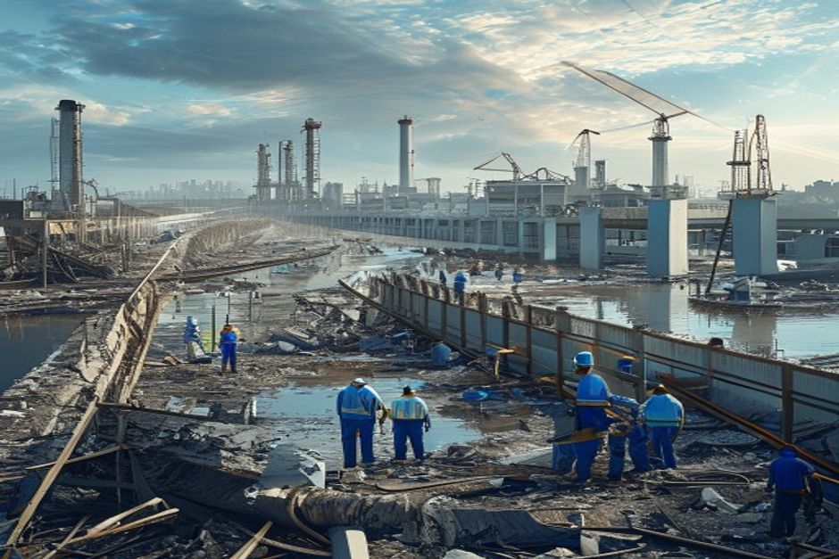
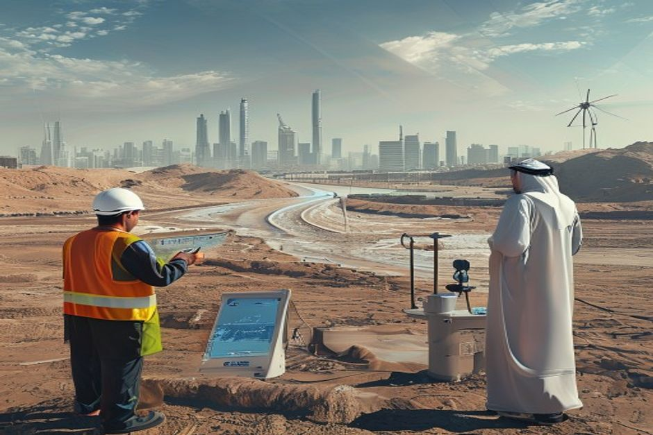

This report synthesizes private document evidence on China's July 2026 weather disasters—characterized by consecutive typhoons, oscillating rain belts, and compounding floods and landslides—with supplementary web evidence on infrastructure spending and regional market trends. The analysis identifies the hardest-hit regions, quantifies insured losses and government relief, and maps the most durable commercial opportunities in climate resilience infrastructure, with a specific cross-border angle for China–UAE collaboration.
July 2026 Disaster Cascade: Four Major Events and Their Human Toll
From July 3–9, Typhoon Maysak made landfall in Hainan and its remnant circulation triggered extreme rainfall in Guangxi. Roads, power, and communications were damaged in Hengzhou, Binyang, Guigang, Fangchenggang, and Qinzhou.
On July 7, a sudden landslide in Tanchang, Gansu, trapped 33 forestry workers, resulting in 21 deaths and 7 injuries. The private document notes the cause is still under investigation and cannot be simply attributed to heavy rain.
Search and identification efforts continued.
- "广西39人死亡、9人失联；其中六蓝水库灾害26人死亡、7人失联。" — Confirms Guangxi death toll and reservoir disaster.
- "1.46万人受灾，11人死亡、1人失联、331人受伤；22间房屋倒塌、4,855间损坏。" — Details Hubei tornado casualties and damage.
- "截至7月28日，41人确认死亡、20人失联、10人受伤" — Pengshui landslide toll.
- "10人死亡、23人受伤，另有174人获救" — Weiyuan flash flood casualties.
The executive case should start with the few numbers the supplementary web record can support
Each headline metric is traceable to a retained supplementary web sources sentence.
Evidence: WEB-E2, WEB-E3, WEB-E4. Sources: lincolninst.edu.
These values are extracted from supplementary web sources text; they are not model-created scores.
Sources
- WEB-E2 supplementary web $1.7B - In July 2012, a huge rainstorm in Beijing led to flooding that caused 79 deaths and an estimated $1.7 billion in damage. Sponge City: Shenzhen Explores the Benefits of Designing with ...
- WEB-E3 supplementary web $5.8B - The central government has pledged a total of $5.8 billion (40 billion Chinese yuan) to incentivize Shenzhen and the 29 other pilot cities to invest in and ... Sponge City: Shenzhen Explores the Benefits of Designing with ...
- WEB-E4 supplementary web $40B - The central government has pledged a total of $5.8 billion (40 billion Chinese yuan) to incentivize Shenzhen and the 29 other pilot cities to invest in and ... Sponge City: Shenzhen Explores the Benefits of Designing with ...
Economic Losses: Insured Claims, Government Relief, and Unquantified Damage
However, a comprehensive national damage assessment has not yet been released.

Supplementary web evidence from ECNS confirms that since the start of the flood season, the central government has allocated a total of 1.19 billion yuan ($175.7 million) in relief funds, with an additional 14.5 billion yuan through agricultural, water conservancy, and transport channels.
The private document cautions that these figures are not comprehensive: the official national disaster summary for July 2026 has not been published.
To preserve operating flexibility, decision-makers should maintain strict risk limits, monitor lead indicators, and align capital deployment with verified progress metrics.
- "截至7月13日，广西、湖北、浙江等20个省区市，保险业累计接到近38万件报案，保险估损63.8亿元，已赔付28.9亿元" — Insurance claims data.
- "中央已紧急预拨1.8亿元" — Central emergency allocation.
- "2026年上半年洪涝和地质灾害已造成1,132.6万人次受灾、124人死亡失踪、直接经济损失338.7亿元" — H1 2026 baseline losses.
- [Web: WEB-E19] "China's central government has allocated a total of 1.19 billion yuan ($175.7 million) in relief funds" — Supplementary web evidence on relief funding.
Investment Opportunities in Climate Resilience Infrastructure
The private document identifies seven durable investment themes, prioritizing multi-year infrastructure upgrades over short-term commodity plays. The most attractive sub-sectors are dam safety, urban drainage, geological monitoring, and integrated emergency.
Dam and reservoir safety upgrades are the top opportunity. The Guangxi reservoir breach will accelerate nationwide safety inspections, reinforcement, seepage monitoring, and digital management. This creates demand for EPC contracts, dam inspection sensors, drone patrols, pumping stations, and long-term maintenance. Urban drainage and flood prevention is the second theme: cities like Shenyang, Nanning, and Shenzhen experienced severe urban flooding, exposing inadequate drainage standards. Investment in underground storage, retention tanks, pipe networks, pumps, flood barriers, sponge city projects, and digital twins for urban flooding is likely to be supported by local government bonds and central budget.
Geological hazard monitoring is a high-tech, high-barrier opportunity. The Chongqing and Gansu landslides will drive adoption of slope radar, InSAR satellite monitoring, Beidou positioning, rainfall and soil moisture sensors, AI-based landslide warning systems, and monitoring for scenic areas, mines, roads, and railway slopes. Emergency equipment and mobile infrastructure—including high-capacity pumps, rescue robots, drones, satellite communication terminals, mobile power, emergency water purification, boats, and temporary shelters—will see direct short-term orders, but revenue is cyclical.
Reconstruction materials and engineering (road repair, pipes, cables, waterproofing, prefabricated buildings, communication towers, power distribution) will benefit, but competition is intense and payment cycles long. Agricultural recovery and smart agriculture (seeds, machinery, plant protection, animal epidemic prevention, drying, cold chain, satellite crop assessment, weather index insurance) will accelerate. Catastrophe insurance and climate finance offer long-term potential in parametric insurance, agricultural weather insurance, and climate risk modeling, but traditional insurers face near-term claims pressure.
- "病险水库、堤坝与水利工程升级" — Identifies dam safety as top opportunity.
- "城市排水与防内涝" — Urban drainage theme.
- "地质灾害监测预警" — Geological monitoring theme.
- "应急装备与移动基础设施" — Emergency equipment theme.
Cross-Border Opportunity: China–UAE Climate Resilience Solutions
The private document proposes packaging China's disaster-tested technologies—urban flood control, slope monitoring, mobile pumping, satellite communications, and insurance risk models—into an integrated solution for UAE municipalities, developers, and free.

The private document explicitly recommends combining China's 'urban flood prevention + slope monitoring + mobile pumping + satellite communications + insurance risk model' into a turnkey solution for UAE municipal departments, real estate developers, industrial parks, airports, and free zones. It argues that China's technological upgrades from the 2026 disasters can be converted into products and case studies for Gulf countries facing sudden heavy rainfall.
Supplementary web evidence supports the UAE's infrastructure growth trajectory. The country's infrastructure sector is estimated at $33.4 billion in 2025 and forecast to reach $41.3 billion by 2030 (4.3% CAGR). The broader Middle East infrastructure construction market is projected to grow from $204 billion in 2025 to $266.7 billion by 2030 (5.51% CAGR). Saudi Arabia's construction market alone is expected to rise from $104.8 billion in 2024 to $174.4 billion by 2030 (8.7% CAGR). These figures indicate strong demand for climate-resilient infrastructure solutions.
China's sponge city program, endorsed by President Xi in 2013, provides a policy framework. The central government pledged $5.8 billion (40 billion yuan) to incentivize 30 pilot cities, including Shenzhen. This demonstrates long-term government commitment to urban water management, which can be adapted for Gulf cities. The 2012 Beijing rainstorm (79 deaths, $1.7 billion damage) and 2018 Super Typhoon Mangkhut (which blew down half the trees in Shenzhen) serve as historical precedents for the scale of investment needed.
- "把中国的'城市防内涝＋坡体监测＋移动排涝＋卫星通信＋保险风险模型'整合成一套解决方案，向阿联酋的市政部门、地产开发商、工业园区、机场和自由区输出" — Core cross-border proposal.
- [Web: WEB-E14] "The country’s infrastructure sector is estimated at USD 33.4 billion in 2025 and forecast to reach around USD 41.3 billion by 2030" — UAE infrastructure market size.
- [Web: WEB-E9] "Across the Middle East, infrastructure construction is forecast to grow from roughly USD 204.0 billion in 2025 to about USD 266.7 billion by 2030" — Middle East market growth.
- [Web: WEB-E3] "The central government has pledged a total of $5.8 billion (40 billion Chinese yuan) to incentivize Shenzhen and the 29 other pilot cities" — Sponge city funding.